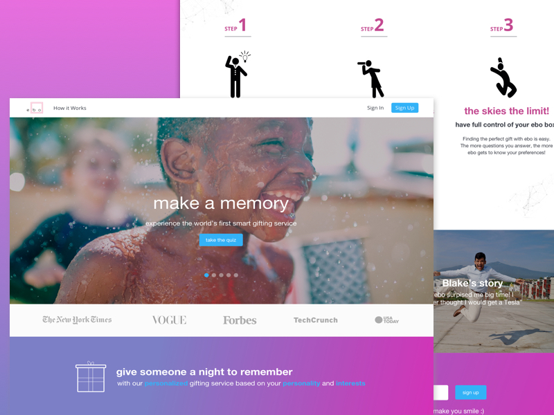
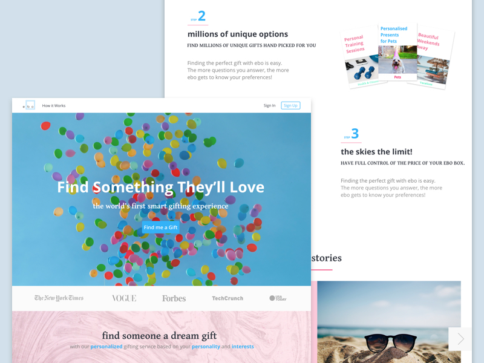

For more information, call today at (44)7539848390
Copyright 2017. Kieran Glover Bespoke Branding & Design.
My work with ebo innovations started with a design contest. I tend not to rely on contests too much for a variety of reasons, but occasionally there are some startup gems like ebo. The brief was simple in it’s premise; create a clean and simple responsive landing page that captures the emotions of gift giving.
After many iterations, I was successfully selected as the winner out of over 200 designs and the rest is history. I am currently still working with ebo to help with designing the rest of the UX sometime in the future.
As I already had a pretty good idea of how the layout might look like, I jumped straight into Sketch to begin working on some early design ideas and submitted several for feedback.
The fist few iterations were clean and fun, but still lacked the emotional connection to the product that was desired. Alongside this, it was important to create a layout that resonates with the users emotions, but also positioned ebo as a leading tech startup.
I’ve always been a big advocate of agile project management and to work with a client that also appreciated this was a huge asset to the working relationship
Looking for a digital design expert for your next project?
As I already had a pretty good idea of how the layout might look like, I jumped straight into Sketch to begin working on some early design ideas and submitted several for feedback.
The fist few iterations were clean and fun, but still lacked the emotional connection to the product that was desired. Alongside this, it was important to create a layout that resonates with the users emotions, but also positioned ebo as a leading tech startup.
I’ve always been a big advocate of agile project management and to work with a client that also appreciated this was a huge asset to the working relationship.
"I am so pleased to have found Kieran and so thankful to him for building me the most wonderful website to be proud of.He was very patient, proffessional and listened well, he understood my vision and with creativity took on my inspiration with complete confidence. I have also asked Kieran to stay on board to help out with monthly maintenance, it is so great to have the help with such a busy work schedule."
Copyright 2017. Kieran Glover Bespoke Branding & Design.